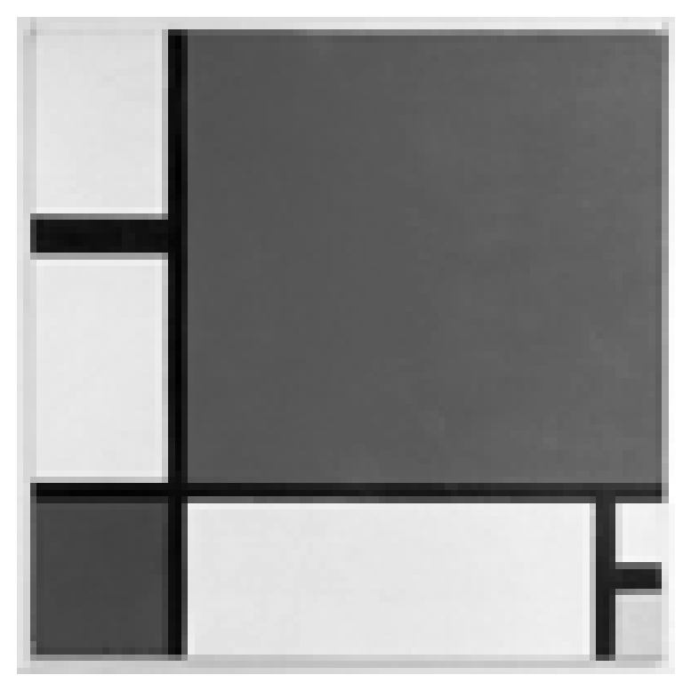
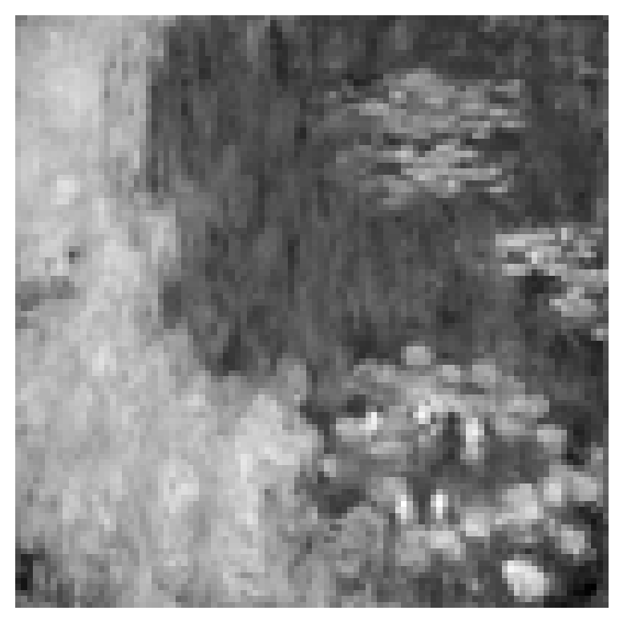

AN APPLE A DAY KEEPS THE DOCTOR AWAY
01000001 01001110 00100000 01000001 01010000 01010000 01001100 01000101
00100000 01000001 00100000 01000100 01000001 01011001 00100000 01001011
01000101 01000101 01010000 01010011 00100000 01010100 01001000 01000101
00100000 01000100 01001111 01000011 01010100 01001111 01010010 00100000
01000001 01010111 01000001 01011001
288 bits / 36.0 bytes
compression rate: 0.0%Huffman Coding
Lossless data compression
Information Theory
Data Compression
Algorithms
Thanks to Pizzey Technology for the wonderful video.
Concepts
Huffman coding is a type of variable-length prefix coding that assigns shorter codes to more frequent symbols and longer codes to less frequent symbols. Formal definitions aren’t very useful when dealing with other concepts, in this case, entropy.
Well, keep this in mind: lossless.
Huffman coding is one of the lossless compression methods. In terms of compression, you cannot compress data smaller than the limit defined by entropy.
Huffman is a bottom-up approach to compression which is optimal, while Shannon entropy defines the theoretical limit, a lower bound.
Examples first.
ASCII
ASCII is a character encoding developed in the ’60s by ANSI. It uses 7 bits for character representation. However, in modern computing, characters are stored in bytes (8 bits) for compatibility reasons.
Let’s take a look at the 8-bit encoded sentence.
You can easily determine the total number of bits in this sentence by simply multiplying the number of characters (including spaces) by the fixed encoding size.
Compress it!
The more frequently a character appears, the shorter its encoded length becomes.
The phrase AN APPLE A DAY KEEPS THE DOCTOR AWAY uses A to rhyme which makes the example more fun.
Huffman tree
We build the tree from the bottom using the less frequent characters. Eventually, the less frequent ones are placed at deeper levels. The deeper a character is, the longer the traversal route from the root, which results in a longer encoding length.
Check the code below.
from collections import Counter
class Node:
def __init__(self, char='', freq=0, left=None, right=None):
self.char = char
self.freq = freq
self.left = left
self.right = right
@property
def is_leaf(self):
return self.left is None and self.right is None
def __str__(self):
if self.is_leaf:
return f"'{self.char}': {self.freq}"
return str(self.freq)
def __lt__(self, other):
return self.freq < other
def __gt__(self, other):
return self.freq > other
class HuffmanTree:
def __init__(self, freq_table):
self.freq_table = dict(freq_table)
self.encoded_table = {}
self.root = None
self.build()
self.encode()
@property
def l_bar(self):
total = 0
for char, freq in self.freq_table.items():
total += len(self.encoded_table[char]) * freq
return total / sum(self.freq_table.values())
def build(self):
nodes = [Node(char, freq) for char, freq in self.freq_table.items()]
while len(nodes) > 1:
3 node1 = nodes.pop(nodes.index(min(nodes)))
node2 = nodes.pop(nodes.index(min(nodes)))
node = Node(freq=node1.freq+node2.freq,
left=node2,
right=node1)
nodes.append(node)
self.root = node
def encode(self):
def dfs(node, path=''):
1 if node.is_leaf:
self.encoded_table[node.char] = path
return
2 dfs(node.left, path+'0')
dfs(node.right, path+'1')
dfs(self.root)- 1
- Characters are only at the leaf nodes. This property ensures that each encoded value is not a substring of another and keeps the unique decodability. This is also called as the prefix-free coding.
- 2
-
Use
0for the left and1for the right. The path from the root to the leaf node represents the encoded result. - 3
-
As the function
minreturns the index of the first occurring minimum value (node.freq) from the listnodes, the built tree is not unique but preserves optimality.
graph RL 139802003677520[36] 139802003677520 -- 0 --> 139802003630608 139802003677520 -- 1 --> 139802003672592 139802003630608[21] 139802003630608 -- 0 --> 139802003675024 139802003630608 -- 1 --> 139802003624080 139802003672592[15] 139802003672592 -- 0 --> 139802003627856 139802003672592 -- 1 --> 139802003620112 139802003675024[13] 139802003675024 -- 0 --> 139802003514128 139802003675024 -- 1 --> 139802003517328 139802003624080[8] 139802003624080 -- 0 --> 139802003635280 139802003624080 -- 1 --> 139802003626128 139802003627856[8] 139802003627856 -- 0 --> 139802003621584 139802003627856 -- 1 --> 139802003628688 139802003620112[7] 139802003620112 -- 0 --> 139802003513552 139802003620112 -- 1 --> 139802003514448 139802003514128[' ': 7] 139802003517328['A': 6] 139802003635280[4] 139802003635280 -- 0 --> 139802003627728 139802003635280 -- 1 --> 139802003627408 139802003626128[4] 139802003626128 -- 0 --> 139802003622992 139802003626128 -- 1 --> 139802003623312 139802003621584[4] 139802003621584 -- 0 --> 139802003628368 139802003621584 -- 1 --> 139802003632976 139802003628688[4] 139802003628688 -- 0 --> 139802003622416 139802003628688 -- 1 --> 139802003632336 139802003513552['E': 4] 139802003514448['P': 3] 139802003627728[2] 139802003627728 -- 0 --> 139802003630736 139802003627728 -- 1 --> 139802003629456 139802003627408[2] 139802003627408 -- 0 --> 139802003631696 139802003627408 -- 1 --> 139802003631184 139802003622992[2] 139802003622992 -- 0 --> 139802003517264 139802003622992 -- 1 --> 139802003634320 139802003623312[2] 139802003623312 -- 0 --> 139802003511248 139802003623312 -- 1 --> 139801657476624 139802003628368['O': 2] 139802003632976['T': 2] 139802003622416['Y': 2] 139802003632336['D': 2] 139802003630736['W': 1] 139802003629456['R': 1] 139802003631696['C': 1] 139802003631184['H': 1] 139802003517264['S': 1] 139802003634320['K': 1] 139802003511248['L': 1] 139801657476624['N': 1]
Huffman code
Finally, the Huffman coded result is below.
AN APPLE A DAY KEEPS THE DOCTOR AWAY
001 01111 000 001 111 111 01110 110 000 001 000 1011 001 1010 000 01101
110 110 111 01100 000 1001 01011 110 000 1011 1000 01010 1001 1000 01001
000 001 01000 001 1010
132 bits / 16.5 bytes
compression rate: 54.2%You might be familiar with the pangram THE QUICK BROWN FOX JUMPS OVER THE LAZY DOG. It contains all the letters from A to Z, which makes it harder to compress.
THE QUICK BROWN FOX JUMPS OVER THE LAZY DOG
00011 00010 0101 001 11111 00001 11110 11101 11100 001 11011 00000 0100
11010 11001 001 11000 0100 10111 001 10110 00001 10101 10100 10011 001 0100
10010 0101 00000 001 00011 00010 0101 001 10001 10000 01111 01110 001 01101
0100 01100
192 bits / 24.0 bytes
compression rate: 44.2%Just for fun, let’s apply Huffman coding to images.


Both Figure 1 (a) and Figure 1 (b) are resized to 100x100 greyscale images. Each pixel is represented by the intensity of light from 0 to 255 which corresponds to one byte of information. This results in 10000 bytes for each image.
After applying Huffman coding to each image, each is compressed to 7903.6 bytes and 8354.9 bytes, respectively.
So, why do we think Figure 1 (a) is easier to draw? Why is it easier to remember pop music notes than those of bebop jazz?
It becomes clear when explained using data compression. Since it has a higher compression rate, it can be described verbally or communicated with a shorter and more compact explanation.
Average codeword length per character (\(\bar{\lambda}\))
Let’s use some notations from now on.
\[ \bar \lambda = \mathbb E [\lambda] = \sum_{i=1}^N p(x_i) \lambda_i \]
- \(\lambda_i\): codeword length for the character \(x_i\)
- \(p(x_i)\): probability of the character \(x_i\) occurring
For the phrase AN APPLE A DAY KEEPS THE DOCTOR AWAY, \(\bar \lambda\) is 3.667 with the unit in bits.
Kraft-McMillan inequality
In coding theory, the Kraft–McMillan inequality gives a necessary and sufficient condition for the existence of a prefix code1.
When we discuss about the upper bound of \(\lambda_i\), we are assuming the worst case scenario for each \(x_i\).
Assert \(p_i\) is smallest among all probabilities. Let’s sort all \(p\) in the descending order, just before picking the least occuring two.
1 <- until the end
\
.
.
\
... >= p >= p_i'' <- and again
\
... >= p >= p >= p_i' <- and again
/ \
... >= p >= p >= p >= p >= p_i <- we are at the very end
/ \ / \
. p
. / \The parent of each node accumulates the minimum possible value, which follows powers of \(2\). This accumulation process stops when we reach the root. We can set each \(\lambda_i\) as the stopping condition, defined by reaching the root.
\[ 2^{\lambda_i} p_i \geq 1 \]
We cannot stop the iteration until the cumulative probability reaches \(1\). The upper inequality represents a partial form of the Kraft-McMillan inequality.
\[\begin{align*} 2^{\lambda_i} p_i &\geq 1 \\ p_i &\geq 2^{-\lambda_i} \\ \sum_{i=1}^{N} p_i &\geq \sum_{i=1}^{N} 2^{-\lambda_i} \\ \sum_{i=1}^{N} 2^{-\lambda_i} &\leq 1 \quad \cdots \text{Kraft-McMillan Inequality} \\ \end{align*}\]
We can add a condition when reaching the root. Since we are assuming \(\lambda_i\) to be the necessary and sufficient number of steps, we can say that if, after iterating \(\lambda_i - 1\) times, we have not reached the root, the process should continue.
\[ 2^{\lambda_i - 1} p_i < 1 \]
We can represent this in a figure like below.
In Figure 2, all \(\lambda_i\) are integers. We are assigning the total width of \(1\) by the power of 2 for each codewords.
By combining two inequalities of stopping conditions:
\[ \log_2 \dfrac{1}{p_i} \leq \lambda_i < \log_2 \dfrac{1}{p_i} + 1 \]
\(\lambda_i\) is considered as an positive integer. Thus,
\[ \lambda_i = \left\lceil \log_2 \dfrac{1}{p_i} \right\rceil \]